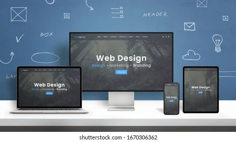

Web Designing

It's the process of planning and building the elements of your website,from structure and layout to images, colors, fonts and graphics.Web design has numerous components that work together to create the finished experience of
a website, including graphic design, user experience design, interface design, search engine optimization (SEO) andcontent creation. These elements determine how a website looks, feels and works on various devices.
Web design is different
from
web development, which is the actual coding that makes a website work. When you're building a website, you need both web design and web development. Although you can find web designers who are also web and UX developers, these are distinct
skill sets.
Web design is the field that involves digital interfaces such as websites, apps, and services.By using HTML code to program websites and CSS to standardize its visual language, web design professionals are responsible for
building digital experiences to be used by the public.The aim is to deliver a quality experience to the audience and help the business reach its goals.As such, a web designer is a professional that acquires the necessary skills
to perform this job. Those might be specialized in specific web design fields, ranging from website creation to mobile app development. In all cases, the goal is the same: to materialize the project's vision.
Important skills to become a web designer:
- Communication skills
- HTML/CSS,Javascript
- Time Management
- User Experience (UX)
- User Interface
- Graphic Designing
- Responsive Design
- Typography
- Knows the principal of designs
Types of Web Design:

- Static Page Design: static Websites layout to the fixed width to present sites and not changes the width on browser, or we can say you can't update the content in static website.It has the advantage of this static layout
is light on code so loads faster than another website.We design the layout static websites from 1 page to hundreds of pages.If you can seen on small pc and horizontal part is small then scroll bar display and you can seen in mobile or tablet
you can zoom the screen in interesting points. cost is generally less than dynamic.
- Fixed Design: A fixed design allows designers to create a website that doesn't change no matter the size of the window or screen.The site uses a strict resolution and will open to those exact measurements whether the user
is viewing it on a mobile device or computer monitor. The strict resolution can help designers create a specific website layout which they know will stay consistent on every browsing device. However, this can also create some hassle for users
on smaller screens because it might require more effort on their part to scroll around the page and find the information they need.
- Responsive Design:
A responsive website design changes its layout and display of information depending on the size of the browser. Whether the website is being viewed on a mobile device, or a computer browser, the webpage can manipulate itself,by
wrapping text and scaling images, to fill any size screen with the most pertinent information.This type of design is beneficial to many websites and organizations because it can allow users to browse through information and products on different
devices more easily.
- Single Page Design: Single page designs are websites that convey all of their information on a single webpage.The single page can be as long as the designer wants, allowing users to scroll down in order to see all the information.When
developing the design, many companies and organizations use a linear journey or narrative to create a flow to the information being relayed to visitors.
This type of design can be very versatile because it has many unique uses.For example,
it can be used to sell products, telling the company's story as the page progresses, or it can be used for artists to share their story and portfolio.
- Liquid Design: A liquid website design behaves similarly to a responsive design, except it doesn't manipulate the layout of the page depending on the size of the screen. The design itself shrinks or stretches the entire
webpage to fit the size of the chosen window, which can be helpful for webpages that don't want to sacrifice information depending on the size of the browser. However, this can also cause the design to have very small, or warped text when
viewing it on screens that are too small or too large.
- Dynamic Design: Dynamic websites, unlike static websites, allow users to interact with the material on the webpage, creating a more active and exciting website design. code to develop these types of webpages often requires something with a little more versatility, such as JavaScript, PHP or ASP.i
Because of their more intricate model and design,dynamic websites can cost a little more money, and sometimes have a longer load time compared to static websites. However,they can also effectively relay information and the benefits of a product
or service through an engaging display.